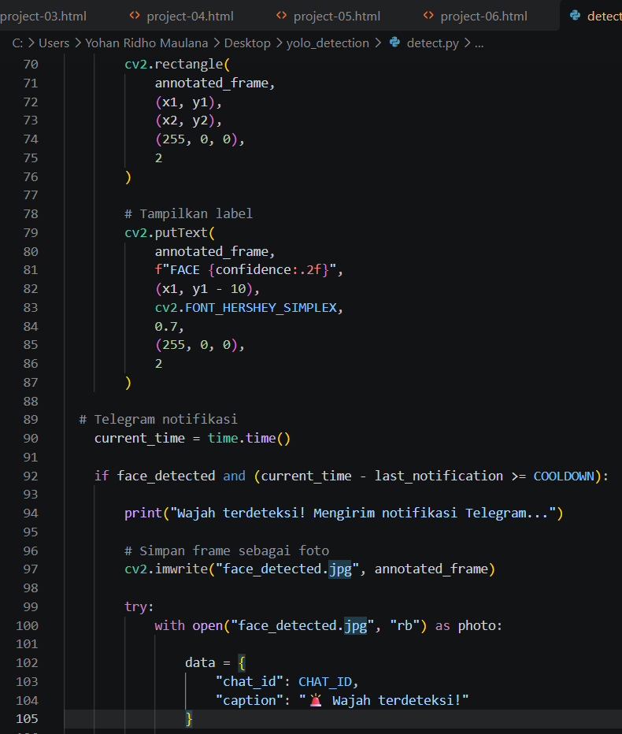

04
Dokumentasi Sistem

Deteksi Real-Time
Tampilan proses deteksi objek dan wajah melalui webcam laptop.

Notifikasi Telegram
Dokumentasi pengiriman foto dan notifikasi ketika wajah terdeteksi.

Implementasi Program
Cuplikan kode program untuk deteksi objek, deteksi wajah, dan notifikasi Telegram.